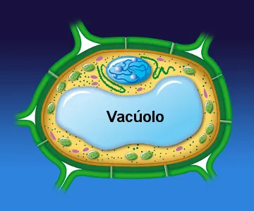

Os vacúolos são organelas envoltas por membranas, encontradas principalmente em células vegetais. Eles têm a função de armazenar substâncias, como nutrientes e resíduos, além de regular a pressão osmótica, contribuindo para a turgidez das células.

Essa turgidez é essencial para manter a estrutura e a rigidez das plantas, permitindo que elas suportem seu próprio peso e resistam a condições adversas. Os vacúolos também podem participar de processos de degradação e reciclagem de componentes celulares.